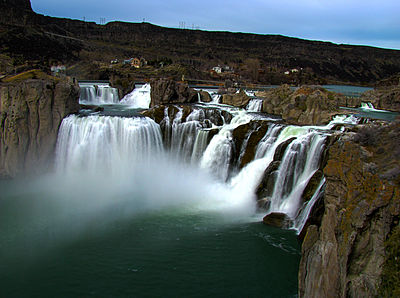
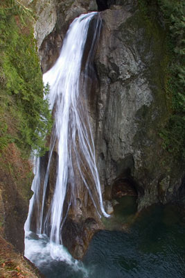

Home
Find Me a Walk
Recommendations

- Shoshone Falls
- Distance Of The Trail: 6 miles round trip
- Difficulty Level: Moderate
- Description:Green wooded trail
- Comments

- Wallace Falls
- Distance Of The Trail: 5 miles round trip
- Difficulty Level: Easy to moderate
- Description: Begins easy and then elevation rise with steps
- Comments

-
Name:Twin Falls
- Distance of the Trail: 4 miles round trip
- Difficulty Level: Easy
- Description: Relatively flat and parts of it are paved
- Comments